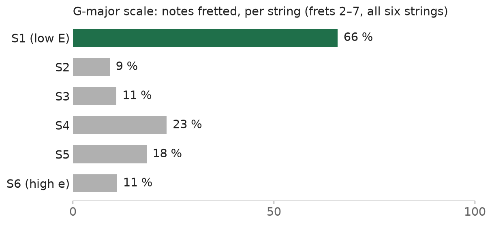
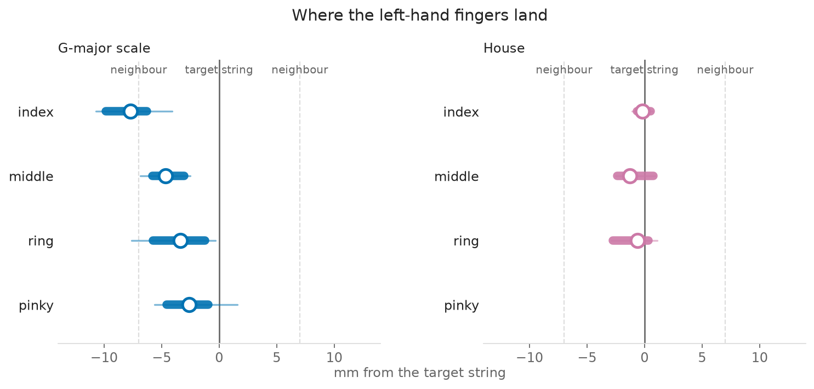

House plays. The G-major scale does not press yet. We need more iterations.
House · 8 / 8 presses · note F1 0.51G-major scale · 16 / 70 presses · note F1 0.05Blocker · 5 GPU-hours per experiment
Mean policy · 10 worlds · guitar offset ±5 mm / ±2° · pushed twice with 40 N · whole piece from t = 0 · sound = what the policy played.
The pieces
HOUSE · 21 s
Perturbed world. Sound on.
8 / 8
presses
0.51
note F1
17 mm
guitar motion
G-MAJOR SCALE · frets 2–7, all six strings · 47 s · 70 notes
Perturbed world. Sound on: mostly wrong notes.
16 / 70
presses (was 10)
0.05
note F1
9 mm
guitar motion
Four metrics
Metric
House
G-major scale
Target
Pressed what it should
8 / 8
16 / 70
all
↳ sounds right (note F1)
0.51
0.05
≥ 0.8
Touched nothing it should not (clean moves)
20 %
7 %
100 %
Guitar stays put (max motion)
17 mm
9 mm
≤ 8 mm
Force in the human range (p99)
9.7 N
7.9 N
6–19 N
Key blocker: not enough iterations
5 h
GPU per experiment
2 / day
experiments (one 4090)
~10
variables tried this week
4 GB
VRAM per run · single GPU
2–4
more 4090-class GPUs
Open problems, not solved yet
1 · Left hand (G-major scale): the whole hand shifts to the bass side; the index lands one string off


2 · Right hand (both pieces): rushes and misses
33 %
G-major scale notes 50–120 ms early / late
25 ms
median: early
16 %
G-major scale notes not plucked
29 %
House plucks missed
Found this week
A per-note landing trick helps the G-major scale and hurts House → each piece keeps its own setting
10 → 16
G-major scale presses, with the trick
0.51 → 0.44
House note F1, with the trick
Why the G-major scale sounds wrong even when a note is pressed
33 %
plucked early / late
29 %
wrong fret
17 %
pressed too lightly
16 %
not plucked
Ruled out
01
Reward terms for where the finger landsNo effect.
02
Pinning the arm to the referenceArm does not move.
03
The landing trick on HouseCosts F1.
04
Three pipeline bugsFixed.
Next
NOW
Make the hand move note by note, like a player.
NEXT
Fix right-hand timing. Cut one experiment from 5 h to 1 h.
ASK
2–4 more GPUs, not shared.
Numbers: pieceaccept / rescore_groups on eval_perturb10o (s197 ck12, s231 ck12); note F1 from 17_music_eval. Videos: kinematic replays of stored evaluation states with audio synthesised from the played events. Living record: notes/GUITAR_DEX_PROJECT.md, notes/daily/D05–D09.